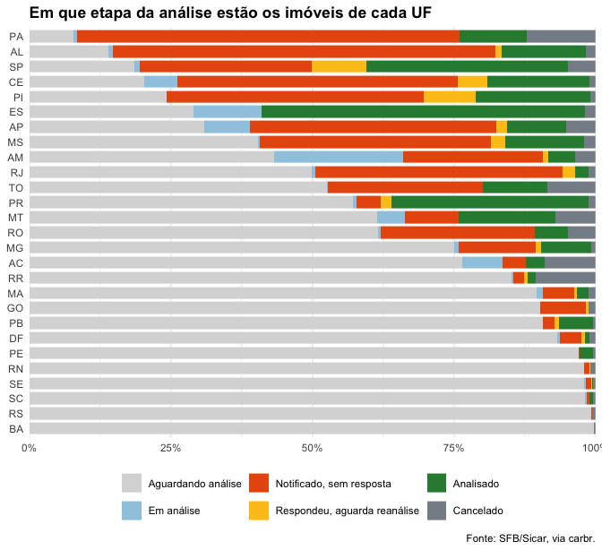
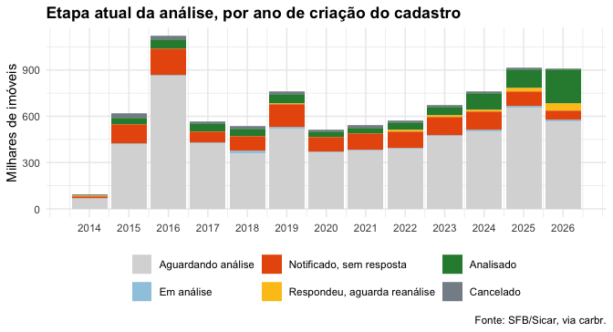
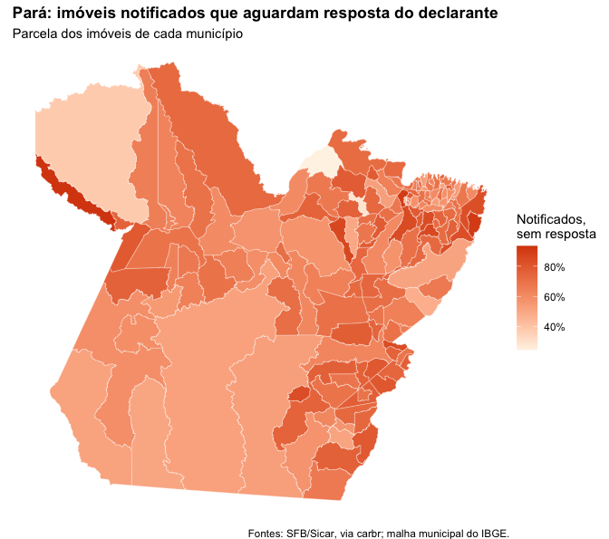

Cadastrar foi a parte rápida: o país tem mais de 8,5 milhões de
imóveis no CAR. A regularização depende do passo seguinte — o órgão
estadual analisar o cadastro e o produtor responder ao que a análise
pede. Este guia usa a coluna condition, a etapa da análise
informada pelo Sicar, para mostrar onde cada UF está e quem espera por
quem.
Tudo aqui sai do resumo pré-calculado (car_summary()),
em segundos, menos o mapa do fim, que lê duas colunas de um estado.
As etapas
O Sicar informa quinze situações de análise. Agrupadas em seis etapas:
stage <- function(condition) {
case_when(
grepl("^Cancelado", condition) ~ "Cancelado",
condition == "Aguardando análise" ~ "Aguardando análise",
condition == "Em análise" ~ "Em análise",
grepl("aguardando atendimento a notificação", condition) ~ "Notificado, sem resposta",
grepl("após revisão", condition) ~ "Respondeu, aguarda reanálise",
grepl("^Analisado", condition) ~ "Analisado",
TRUE ~ "Outro"
) |>
factor(c(
"Aguardando análise", "Em análise", "Notificado, sem resposta",
"Respondeu, aguarda reanálise", "Analisado", "Cancelado"
))
}
national <- car_summary("condition") |>
mutate(stage = stage(condition)) |>
count(stage, wt = properties, name = "properties") |>
mutate(share = round(100 * properties / sum(properties), 1))
national
#> # A tibble: 6 × 3
#> stage properties share
#> <fct> <int> <dbl>
#> 1 Aguardando análise 5978543 69.7
#> 2 Em análise 109335 1.3
#> 3 Notificado, sem resposta 1309315 15.3
#> 4 Respondeu, aguarda reanálise 134338 1.6
#> 5 Analisado 874463 10.2
#> 6 Cancelado 172067 2Sete em cada dez cadastros ainda não foram analisados. Dos que foram, a maior parte parou no passo seguinte: 1,3 milhão de imóveis foram notificados e aguardam resposta do declarante, mais do que os 0,9 milhão com análise concluída.
A fila não é a mesma em cada UF
palette <- c(
"Aguardando análise" = "#d9d9d9", "Em análise" = "#9ecae1",
"Notificado, sem resposta" = "#e8590c", "Respondeu, aguarda reanálise" = "#fcc419",
"Analisado" = "#2b8a3e", "Cancelado" = "#868e96"
)
by_state <- car_summary(c("state", "condition")) |>
mutate(stage = stage(condition)) |>
count(state, stage, wt = properties, name = "properties") |>
group_by(state) |>
mutate(share = properties / sum(properties)) |>
ungroup()
order <- by_state |>
filter(stage == "Aguardando análise") |>
arrange(desc(share)) |>
pull(state)
by_state |>
mutate(state = factor(state, order)) |>
ggplot(aes(share, state, fill = stage)) +
geom_col(position = position_stack(reverse = TRUE), width = 0.8) +
scale_x_continuous(labels = function(x) paste0(100 * x, "%"), expand = c(0, 0)) +
scale_fill_manual(values = palette, name = NULL) +
guides(fill = guide_legend(nrow = 2)) +
labs(
title = "Em que etapa da análise estão os imóveis de cada UF",
x = NULL, y = NULL, caption = "Fonte: SFB/Sicar, via carbr."
) +
theme_minimal() +
theme(legend.position = "bottom", plot.title = element_text(face = "bold"))
plot of chunk etapas
Há três situações bem diferentes. Em parte dos estados quase nada foi analisado (cinza). Em alguns a análise andou e concluiu (verde). E em outros a análise andou, mas parou na notificação (laranja): o órgão fez a sua parte e a resposta não veio.
notified <- by_state |>
filter(stage == "Notificado, sem resposta") |>
arrange(desc(properties)) |>
mutate(share = round(100 * share, 1))
notified
#> # A tibble: 25 × 4
#> state stage properties share
#> <chr> <fct> <int> <dbl>
#> 1 PA Notificado, sem resposta 265238 67.5
#> 2 CE Notificado, sem resposta 203419 49.5
#> 3 MG Notificado, sem resposta 161094 13.6
#> 4 PI Notificado, sem resposta 153090 45.3
#> 5 SP Notificado, sem resposta 144251 30.4
#> 6 AL Notificado, sem resposta 97264 67.6
#> # ℹ 19 more rowsAs cinco primeiras UFs concentram 71% das notificações sem resposta.
Quem está sem responder
waiting <- car_summary(c("condition", "size_class")) |>
filter(stage(condition) == "Notificado, sem resposta") |>
count(size_class, wt = properties, name = "properties") |>
mutate(share = round(100 * properties / sum(properties), 1))
waiting
#> # A tibble: 3 × 3
#> size_class properties share
#> <chr> <int> <dbl>
#> 1 large 27771 2.1
#> 2 medium 86308 6.6
#> 3 small 1195236 91.391,3% são imóveis de até quatro módulos fiscais. É o público que menos tem acesso a técnico, a ferramenta de geoprocessamento e a quem explique o relatório da análise — e para quem a pendência no CAR pesa no crédito rural.
A notificação envelhece
Pelo ano de criação do cadastro, a resposta não chega com o tempo: de cada ano desde 2015, entre um oitavo e um quinto dos cadastros está parado na notificação, e os mais antigos não estão em situação melhor.
car_summary(c("created_year", "condition")) |>
mutate(stage = stage(condition)) |>
count(created_year, stage, wt = properties, name = "properties") |>
ggplot(aes(created_year, properties / 1e3, fill = stage)) +
geom_col(position = position_stack(reverse = TRUE)) +
scale_x_continuous(breaks = 2014:2026) +
scale_fill_manual(values = palette, name = NULL) +
guides(fill = guide_legend(nrow = 2)) +
labs(
title = "Etapa atual da análise, por ano de criação do cadastro",
x = NULL, y = "Milhares de imóveis", caption = "Fonte: SFB/Sicar, via carbr."
) +
theme_minimal() +
theme(legend.position = "bottom", plot.title = element_text(face = "bold"))
plot of chunk anos
Onde, dentro de um estado
O resumo vai até a UF. Para descer ao município,
car_tbl() lê só as duas colunas necessárias do arquivo do
estado. No Pará, a UF com mais notificações sem resposta:
para <- car_tbl("PA") |>
count(municipality_code, municipality, condition) |>
collect() |>
mutate(stage = stage(condition)) |>
group_by(municipality_code, municipality) |>
summarise(
properties = sum(n),
notified = sum(n[stage == "Notificado, sem resposta"]),
.groups = "drop"
) |>
mutate(share = notified / properties)
para |>
arrange(desc(notified)) |>
mutate(share = round(100 * share, 1))
#> # A tibble: 144 × 5
#> municipality_code municipality properties notified share
#> <int> <chr> <dbl> <dbl> <dbl>
#> 1 1505064 Novo Repartimento 12492 8782 70.3
#> 2 1504208 Marabá 12935 8043 62.2
#> 3 1500206 Acará 9267 7836 84.6
#> 4 1504703 Moju 12009 7305 60.8
#> 5 1505486 Pacajá 11170 7169 64.2
#> 6 1507300 São Félix do Xingu 13174 6971 52.9
#> # ℹ 138 more rows
mesh <- sf::read_sf(paste0(
"https://servicodados.ibge.gov.br/api/v3/malhas/estados/PA?intrarregiao=municipio",
"&formato=application/vnd.geo%2Bjson&qualidade=intermediaria"
)) |>
mutate(municipality_code = as.integer(codarea)) |>
left_join(para, by = "municipality_code")
ggplot(mesh) +
geom_sf(aes(fill = share), colour = "white", linewidth = 0.1) +
scale_fill_gradient(
low = "#fff4e6", high = "#d9480f", na.value = "grey85",
labels = function(x) paste0(100 * x, "%"), name = "Notificados,\nsem resposta"
) +
labs(
title = "Pará: imóveis notificados que aguardam resposta do declarante",
subtitle = "Parcela dos imóveis de cada município",
caption = "Fontes: SFB/Sicar, via carbr; malha municipal do IBGE."
) +
theme_void() +
theme(plot.title = element_text(face = "bold"))
plot of chunk para
É uma lista de onde um mutirão, um sindicato ou um serviço de atendimento ao produtor rende mais: municípios com muitos imóveis já analisados à espera de uma resposta que depende só de o declarante entender o que foi pedido.